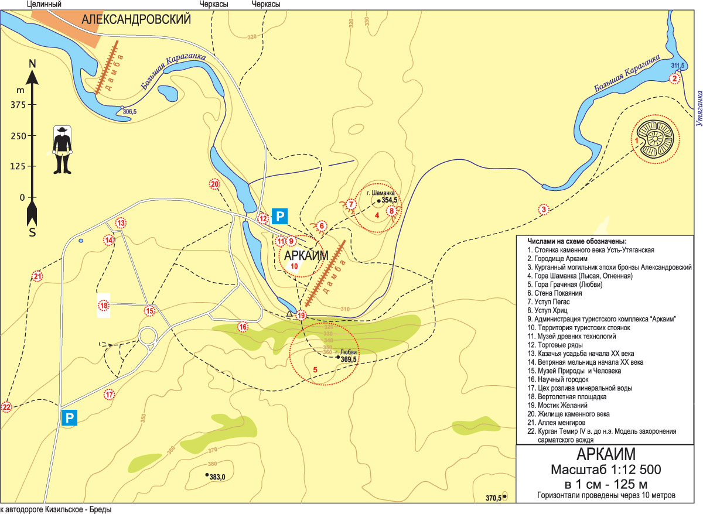

Аркаим - это археологический комплекс, расположенный на территории
Челябинской области, который представляет собой древний город
бронзового века. Вы сможете увидеть остатки круглого крепостного
сооружения, оставленного нашими предками. Здесь пронизывается
атмосфера древности и загадочности.
Аркаим является аналогом легендарного города "Вечного города" или
"Шамбалы". Многие берут Аркаим за историческую модель этого
загадочного и мифического места, где жили просветленные мудрецы.
Город Аркаим изначально был построен с учетом астрономических
знаний. Относительное положение строений и их ориентация отражают
значимые астрономические явления, такие как солнцестояния и лунные
фазы. Это свидетельствует о том, что жители Аркаима обладали
знаниями астрономии и вели наблюдения за космическими явлениями.

Маршрут 2: По следам промышленного наследия
Металлургический комбинат "Магнитогорск".
Магнитогорск был основан в 1929 году и стал одним из крупнейших
металлургических центров России. Здесь вы сможете увидеть огромные
металлургические заводы, одну из самых высоких действующих печей в
мире и познакомиться с историей развития металлургической
промышленности региона.
Магнитогорск был одним из крупнейших и наиболее значимых
металлургических комбинатов СССР. Он был создан в 1930-х годах и
сыграл важную роль в индустриализации страны, особенно в период
Второй мировой войны. Завод был фокусирован на производстве стали и
других металлургических продуктов.
На территории комбината можно найти ряд архитектурных памятников,
которые отображают историческое и культурное значение предприятия.
Один из наиболее известных памятников - Памятник-музей "Металлурк".
Он был построен в 1959 году и является символом Магнитогорска и его
промышленного потенциала.